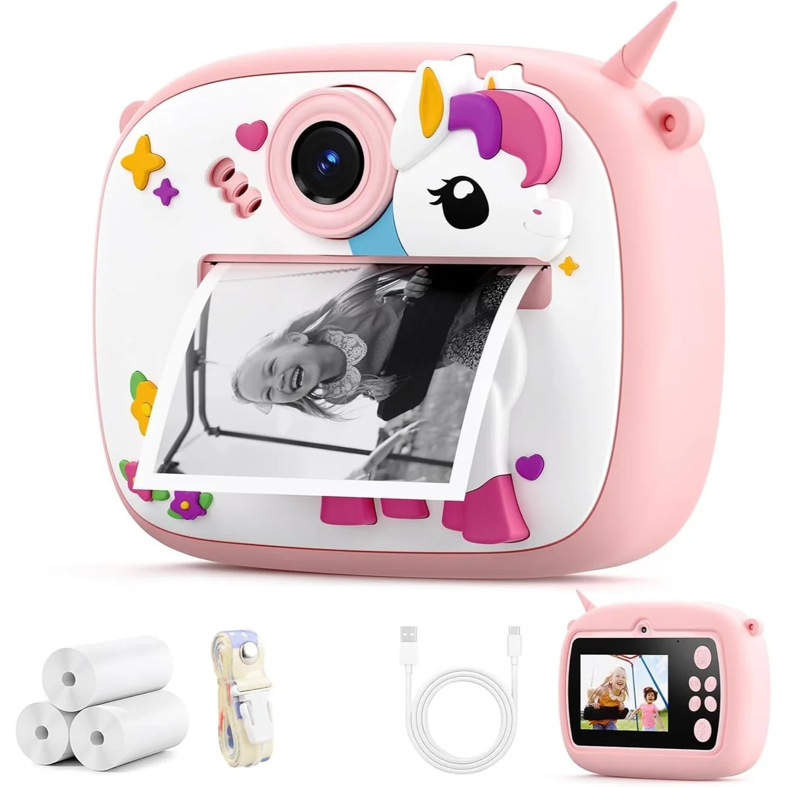
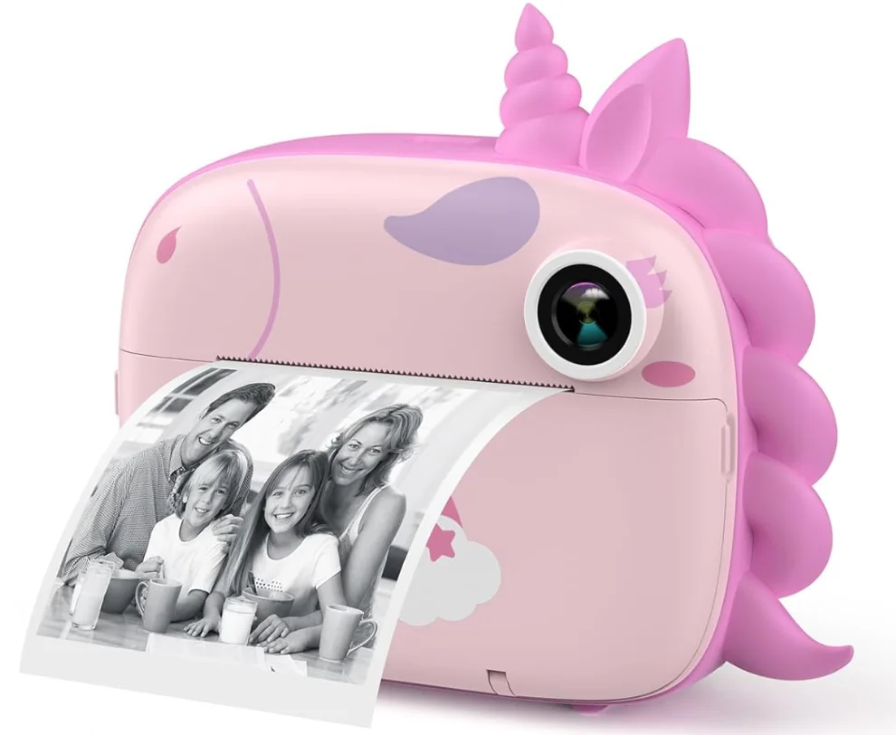

دوربین چاپ سریع Unicorn یا EN71؟ قبل از خرید چه تفاوتهایی را بررسی کنیم؟
مقایسه دو دوربین چاپ سریع Unicorn و مدل تکشاخ EN71؛ نوع چاپ، کاغذ مصرفی، باتری، کیفیت عکس و اقلام همراه را قبل از انتخاب بررسی کن.
آخرین بازبینی: ۲۶ مهر ۱۴۰۵ · تحریریه سنجو
دو آگهی مشابهاند؛ جزئیات نسخه را قبل از انتخاب تطبیق بده
قیمت و موجودی در فروشگاه ممکن است تغییر کند.

مدل یونیکورندوربین چاپ سریع Unicorn
نسخهای با عنوان عمومی Unicorn؛ جزئیات چاپ و اقلام همراه را در آگهی ببین.
اسنپشاپ · مشاهده قیمت
کد EN71دوربین چاپ سریع EN71
نسخه تکشاخ با کد EN71؛ قبل از خرید مشخصات واقعی نسخه را تطبیق بده.
اسنپشاپ · مشاهده قیمت
از عنوان این دو محصول چه میدانیم؟
هر دو در Affilio/اسنپشاپ بهعنوان دوربین عکاسی چاپ سریع معرفی شدهاند. یکی عنوان «مدل یونیکورن» دارد و دیگری «مدل تک شاخ کد EN71». از همین عنوانها نمیتوان نوع فناوری چاپ، رزولوشن یا باتری را نتیجه گرفت.
مهمترین مواردی که باید بین دو آگهی مقایسه شوند
- نوع چاپ و نوع کاغذ یا رول مصرفی
- هزینه و در دسترس بودن کاغذ یدکی
- باتری، روش شارژ و زمان استفاده اعلامشده
- کیفیت/ابعاد فایل عکس و وجود حافظه یا کارت حافظه در صورت پشتیبانی
- نمایشگر، فیلترها یا امکانات نرمافزاری در صورت درج رسمی
- کاغذ، کابل، بند یا سایر اقلام داخل جعبه
اگر برای هدیه یا کودک میخری
سن استفاده، سادگی منو، دوام بدنه و هزینه مواد مصرفی را از روی آگهی دقیق بسنج. ظاهر فانتزی بهتنهایی درباره مناسببودن برای سن مشخص چیزی ثابت نمیکند.
جمعبندی انتخاب
در حال حاضر برنده قطعی اعلام نمیکنیم، چون تفاوت فنی کافی از عنوانها قابل اثبات نیست. دو آگهی را باز کن و مشخصات بالا را خطبهخط کنار هم بگذار؛ سپس قیمت و هزینه کاغذ مصرفی را وارد تصمیم کن.
قیمت و موجودی امروز
مدل، حجم/کد و محتویات بسته را در صفحه فروشگاه نهایی دوباره تطبیق بده.
لینکها همکاری در فروش هستند و برای خریدار هزینه اضافه ایجاد نمیکنند.